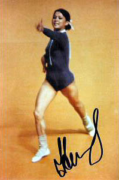

Nelli Kim (USSR)
1976 Olympic AA Silver Medalist and V
Champion
1978 World AA Silver Medalist
1979 World AA Champion
1980 Olympic FX Champion

|
Medal Total Olympic
Games: 5 Gold, 1 Silver |
Nellie was born on July 29, 1957 in Chimkent (Kazakhstan), USSR. Her mother is Tatar and her father is Korean; Nellie is the oldest of 3 children. She began gymnastics in 1966 at age 9 with coach Vladimir Baidin. She was the first female to perform a tucked full-twisting Tsukahara vault (and scored a 10.0 in Montreal for the gold medal on that apparatus). She married fellow gymnast Vladimir Achasov in 1977; they divorced in early 1979.
On March 28, 1981, Nellie married cyling champion Valery Movchan in the Ukrainian city of Kharkov. The wedding was witnessed by Nellie's teammate Natalia Shaposhnikova. Kim worked as a coach in Minsk and also became a brevet judge (her first international assignment was the 1984 Jr. European Championships). In 1990, she became the coach of the Korean national team, and in 1991 she became the coach of the South African national team.
Nellie currently lives in Minneapolis with her daughter. Husband Valery is a businessman in Minsk. At the FIG Congress in late 2004 Nellie was elected President of the Women's Technical Committee. Visit Nelli's website and a tribute to her on the CSKA website (requires Cyrillic fonts).
Competition Results
1971
Jr. USSR Championships: 5th AA
1972
Jr. Friendship Tournament (Druzhba): 1st Team, 2nd FX
Jr. USSR-HUN: 1st Team, 2nd AA
Jr. USSR Championships: 2nd AA, 1st V, 1st UB
USSR Schoolchildren's Spartakiad: 2nd AA, 1st FX
1973
All-Union Youth Sports Games: 1st Team, 1st AA,
1st B, 2nd UB, 3rd V
Chunichi Cup: 1st AA
Jr. Friendship Tournament (Druzhba): 1st Team, 2nd AA, 2nd UB, 2nd
FX, 6th V
USSR Cup: 8th AA, 1st UB
1974
Milk Meet: 5th AA
Riga International: 2nd AA
USSR Championships: 3rd AA, 2nd V, 2nd UB
USSR Cup: 2nd AA
World Championships (Varna): 1st Team, 9th AA (prelims), 3rd
B
1975
Chunichi Cup: 4th AA
European Championships: 2nd AA, 1st FX, 2nd
B, 3rd V, 3rd UB
JPN-USSR Dual Meet: 1st Team, 1st AA
Moscow News: 1st AA, 1st UB, 1st B, 1st FX, 2nd V
Pre-Olympics: 2nd AA, 1st V, 1st B, 1st FX, 2nd UB
USSR Championships: 1st AA, 1st UB, 1st B, 1st FX, 2nd V
USSR Cup: 2nd AA
USSR Spartakiad: 1st AA
1976
Chunichi Cup: 15th AA
Olympics: 1st Team, 2nd AA, 1st V,
1st FX, 6th UB
Tokyo Cup: 1st V, 1st B, 1st FX
USSR Cup: 1st AA
1977
European Championships: 3rd AA, 1st V,
2nd B, 3rd FX, 4th UB
1978
USSR Cup: 16th AA
World Championships (Strasbourg): 1st Team, 2nd
AA, 1st V, 1st FX
1979
Athens International: 1st AA, 1st V, 1st B, 1st FX, 2nd UB
USSR Championships: 5th AA, 1st FX, 2nd V, 2nd UB, 4th B
USSR Spartakiad: 1st Team, 3rd AA, 1st V, 1st UB, 1st FX
World Championships (Fort Worth): 2nd Team, 1st AA,
2nd B, 2nd FX, 3rd V, 5th UB
World Cup: 2nd AA, 3rd V, 3rd
B, 8th FX
1980
Olympics: 1st Team, 5th AA, 1st
FX, 6th UB
USSR Championships: 1st AA
This page was created on January 27, 2000 and was
last updated on March 25, 2026.
© Gymn Forum